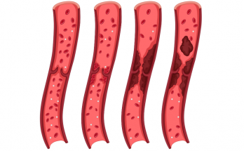

သွေးကြောကျဉ်းမြောင်း ပိတ်ဆို့မှုကို သက်သာစေနိုင်သည့် အစားအစာ ၂၀

သွေးကြောကျဉ်းမြောင်း ပိတ်ဆို့မှုကို သက်သာစေနိုင်သည့် အစားအစာ ၂၀
သွေးကြောတွေဟာ အချိန်ကြာလာတာနဲ့ အမျှ တင်းမာလာပြီး ကျဉ်းမြောင်းပိတ်ဆို့ဖို့ လွယ်လာပါတယ်။ ဒီလို မဖြစ်အောင် သွေးကြောကျန်းမာရေးကို ငယ်ရွယ်စဉ်ကတည်းက ဂရုစိုက်သင့်ပါတယ်။ တချို့ အစားအစာတွေက သွေးကြောကျဉ်းမြောင်းပိတ်ဆို့မှုကို ကာကွယ်ပေးနိုင်ပြီး
ကျဉ်းမြောင်းနေတဲ့ သွေးကြောတွေကို ပြန်လည်သက်သာ ကောင်းမွန်လာစေနိုင်ပါတယ်။
၁။ ကွေကာအုပ်
ကွေကာအုပ်မှာ ပျော်ဝင်နိုင်တဲ့ အမျှင်ဓာတ်များစွာ ပါဝင်ပါတယ်။ ဒီအမျှင်ဓာတ်တွေက သွေးကြောကျဉ်းမြောင်းစေတဲ့ မကောင်းတဲ့ LDL ကိုလက်စထရောကို လျှော့ချပေးနိုင်ပါတယ်။
၂။ ပဲအမျိုးမျိုး
အမျှင်ဓာတ်များစွာ ပါဝင်တဲ့ ပဲတွေဟာ သွေးကြောတွေရဲ့ ကျုံ့ဆန့်နိုင်စွမ်းကို တိုးတက်စေပြီး သွေးဖိအားကို လျှော့ချပေးပါတယ်။ ဓာတ်တိုးဆန့်ကျင်ပစ္စည်း ပါဝင်တဲ့အတွက် နှလုံးရောဂါကို ဖြစ်စေနိုင်တဲ့ ရောင်ရမ်းခြင်းတွေကိုလည်းလျှော့ချပေးနိုင်ပါတယ်။
၃။ ပဲနီလေး
ပဲအမျိုးအစားဝင်ဖြစ်တဲ့အတွက် ပဲတွေလို ကောင်းကျိုးရတဲ့အပြင် အသားဓာတ်လည်း များစွာပါဝင်ပါတယ်။ သွေးဖိအား များတာကြောင့်ဖြစ်တဲ့ သွေးကြောပျက်ဆီးမှုကိုလည်း ပြန်လည် ကောင်းမွန်စေနိုင်ပါတယ်။ ပဲနီလေးမှာ အသားနဲ့အမျှင်ဓာတ် များတဲ့အပြင် သွေးဖိအားကို လျော့ကျစေနိုင်တဲ့ ကယ်လ်စီယမ်၊
ပိုတက်စီယမ်နဲ့ မဂ္ဂနီဆီယမ်ဓာတ်တွေ ပါဝင်ပါတယ်။
၄။ ငါး အမျိုးမျိုး
ငါးမှာ ပါဝင်တဲ့ အိုမီဂါ ၃ ဖက်တီးအက်စစ် က ဦးနှောက်ကျန်းမာရေးကို ကောင်းမွန်စေတာကို သိပြီး ဖြစ်ပါတယ်။ ဒါ့အပြင် အိုမီဂါ ၃ ဖက်တီးအက်စစ် က ရောင်ရမ်းမှုတွေကို လျှော့ချပေးနိုင်ပြီး သွေးကြောအတွင်းမှာ သွေးခဲဖြစ်ပေါ်မှုကို လျှော့ချပေးနိုင်ပါတယ်။
၅။ ထောပတ်သီး
ထောပတ်သီးမှာ ပါဝင်တဲ့ မပြည့်ဝဆီတွေက မကောင်းတဲ့ LDL ကိုလက်စထရောကို လျော့နည်းစေနိုင်ပြီး ကောင်းတဲ့ HDL ကိုလက်စထရောကို များပြားစေတဲ့အတွက် နှလုံးနဲ့ သွေးကြောကျန်းမာရေးအတွက် ကောင်းမွန်စေပါတယ်။
၆။ Pistachios- စိမ်းဝါရောင်ရှိသော အခွံမာစေ့တစ်မျိုး
အခွံမာသီးမှာ ပါဝင်တဲ့ အဆီတွေဟာ နှလုံး ကျန်းမာရေးအတွက်ကောင်းမွန်ပါတယ်။ Pistachios မှာ ဒီအချက်တွေအပြင် စတီရော လို့ခေါ်တဲ့ ဓာတ်တစ်မျိုး ပါဝင်တဲ့အတွက် အူလမ်းကြောင်းကနေ ကိုလက်စထရော စုပ်ယူမှုကို လျှော့ချပေးပါတယ်။
၇။ နနွင်း
နနွင်းမှာ ဓာတ်တိုးဆန့်ကျင်ပစ္စည်းတွေ ပါဝင်တဲ့အတွက် သွေးကြောမှာ အဆီစုလာခြင်းကို တားဆီးပေးပြီး သွေးကြောကျဉ်းတာကို လျှော့ချပေးနိုင်ပါတယ်။
၈။ ပန်းဂေါ်ဖိစိမ်း
လေ့လာစမ်းသပ်ချက်တွေ အရတော့ ပန်းဂေါ်ဖိစိမ်းမှာ ပါဝင်တဲ့ Sulforaphane- ဆာဖိုရာဖိန်း ဆိုတဲ့ ဓာတ်တစ်မျိုးက ပရိုတင်းဓာတ်တစ်မျိုးကို ထုတ်ဖို့အားပေးပြီး သွေးကြောပိတ်ဆို့မှုကို ကာကွယ်ပေးနိုင်တယ်လို့ သိရပါတယ်။ ဒါ့အပြင် ပန်းဂေါ်ဖီစိမ်းမှာ ဓာတ်တိုးဆန့်ကျင် သတ္တိလည်း
ရှိပါတယ်။
၉။ ကညွတ်
ကညွတ်မှာပါဝင်တဲ့ Quercetin- ကွာစီတင် ဆိုတဲ့ဓာတ်တစ်မျိုးက သွေးကြောပိတ်ဆို့မှုကို ကာကွယ်ပေးနိုင်ပါတယ်။
၁၀။ ဖရဲသီး
ဖရဲသီးမှာ Citrulline- စစ်ရူလိုင်း ဆိုတဲ့ ဓာတ်တစ်မျိုး ပါဝင်ပါတယ်။ Citrulline- စစ်ရူလိုင်း ဆိုတာ Nitric Oxide- နိုက်စရစ်အက်စစ် ဆိုတဲ့ ဓာတ်တစ်မျိုးကို ထုတ်လုပ်ပေးပြီး သွေးကြောတွေ မာကျောတောင့်တင်းလာတာကို ကာကွယ်ပေးပါတယ်။
၁၁။ ဂျုံကြမ်း- Whole Grain
ဂျုံကြမ်းနဲ့ လုပ်တဲ့ ခေါက်ဆွဲ၊ ပေါင်မုန့် စတာတွေက နုလုံးကျန်းမာရေးအတွက် ကောင်းမွန်ပါတယ်။ သူ့ဆီမှာ ပါဝင်တဲ့ အမျှင်ဓာတ်က သွေးတွင်းက မကောင်းတဲ့အဆီတွေ စွန့်ထုတ်တာကို ကူညီပေးပြီး အူတွင်းမှ ကောင်းတဲ့ပိုးမွှားတွေကို ထိန်းသိမ်းပေးပါတယ်။
၁၂။ DHA ပါဝင်သည့် နို့
အသက်ကြီးလာတာနဲ့အမျှ သွေးကြောတွေ မာကြောလာပါတယ်။ ဒီလိုဖြစ်လာတာကို ကာကွယ်ဖို့အတွက် DHA ဆိုတဲ့ ဓာတ်တစ်မျိုး လိုအပ်ပါတယ်။ DHA ဟာ အများအားဖြင့် ပင်လယ်စာတွေမှာ ပါဝင်ပါတယ်။ ငါးမစားတဲ့သူတွေအတွက်တော့ DHA ထည့်ထားတဲ့ နို့ကို သောက်သုံးပေးသင့်ပါတယ်။
၁၃။ အာလူး
အာလူးမှာ ပိုတက်ဆီယမ် ကြွယ်ဝတဲ့အတွက် သွေးဖိအားကို ကျစေပါတယ်။ ဒါ့အပြင် အမျှင်ဓာတ်များစွာလည်း ပါဝင်ပါသေးတယ်။
၁၄။ ချောကလက်
ကိုကိုုးစေ့မှာ ပါဝင်တဲ့ ဓာတ်တိုးဆန့်ကျင်သတ္တိက နှလုံးကျန်းမာရေးအတွက် ကောင်းမွန်ပါတယ်။ ချောကလက်ထဲမှာဆို ကို်ကိုးဓာတ်ပမာဏ ၂၀ ရာခိုင်နှုန်းကျော်ပါဝင်တဲ့ ချောကလက်အမည်း (Dark Chocolate) ကို ရွေးသင့်ပါတယ်။
၁၅။ ကော်ဖီ
ကော်ဖီစေ့ကလည်း တခြားအစေ့အစံတွေလိုပဲ ဓာတ်တိုးဆန့်ကျင်သတ္တိ ပါဝင်တဲ့အတွက် နှလုံးကျန်းမာရေးအတွက် ကောင်းမွန်ပါတယ်။
၁၆။ ဝိုင်
ဝိုင်နီမှာ အိုမင်းရင့်ရော်ခြင်းကို နှေးကွေးစေတဲ့ Resveratrol ဆိုတဲ့ ဓာတ်ပါဝင်ပါတယ်။ ရောင်ရမ်းမှုကိုလည်း လျှော့စေနိုင်ပါတယ်။ ဝို်င်နီကို အသင့်အတင့် သောက်သုံးပေးတာက နှလုံးကျန်းမာရေးကို ကောင်းမွန်စေနိုင်ပါတယ်။
၁၇။ ကြက်ဥ
ကြက်ဥထဲမှာပါတဲ့ အဆီက ခန္ဓာကိုယ်အတွက်ကောင်းတဲ့ HDL ကိုလက်စထရောကို များစေပါတယ်။ ကြက်ဥကို နေ့စဉ်စားပေးတာကြောင့် နှလုံးရောဂါဖြစ်ပွားနိုင်ခြေကို ၁၁ ရာခိုင်နှုန်းထိ လျှော့ပေးနိုင်ပါတယ်။
၁၇။ ဘယ်ရီသီးများ
ဘယ်ရီ အမျိုးအစားဝင် အသီးတွေမှာ အမျှင်ဓာတ်နဲ့ ဓာတ််တိုးဆန့်ကျင်ပစ္စည်းတွေ အများအပြား ပါဝင်ပါတယ်။ ဒါ့အပြင် Anthocyanins- အန်သိုဆိုင်းယမ်နင်း ဆိုတဲ့ဓာတ်တစ်မျိုး ပါဝင်တဲ့အတွက် သွေးကြောတွေကို ကျယ်စေပါတယ်။
၁၉။ လက်ဖက်စိမ်း
လက်ဖက်စိမ်းမှာ ပါတဲ့ EGCG ဆိုတဲ့ ဓာတ်တစ်မျိုးက သွေးကြောတွေမှာ စုပုံတဲ့ အဆီတွေကို သေးငယ်သွားစေနိုင်ပြီး ခန္ဓာကိုယ်အတွင်းက မကောင်းတဲ့ ကိုလက်စထရောတွေကိုပါ လျှော့ချပေးနိုင်ပါတယ်။
၂၀။ အချဉ်ဖောက်ထားသော အစားအစာများ
Probiotics တွေမှာ အူလမ်းကြောင်းကျန်းမာရေးအတွက် ကောင်းမွန်တဲ့ ပိုးတွေကို အထောက်အပံ့ ပေးနိုင်တဲ့အတွက် နောက်ပိုင်းမှာ လူသုံးများလာပါတယ်။ Probiotics တွေလိုပဲ အချဉ်ဖောက်ထားတဲ့ အစားအစာတွေ ဖြစ်တဲ့ ဒိန်ချဉ် ကင်ချီ စတာတွေကလည်း အူလမ်းကြောင်း က
ကျန်းမာရေးကို ကောင်းမွန်စေပါတယ်။ နောက်ပိုင်း လေ့လာမှုတွေမှာဆိုရင် အချဉ်ဖောက်ထားတဲ့ အစားအစာတွေက သွေးဖိအားကို ကျစေနိုင်ပြီး မကောင်းတဲ့ အဆီတွေကို ကျစေနိုင်တာကိုပါ တွေ့ရပါတယ်။
Dr.MTA